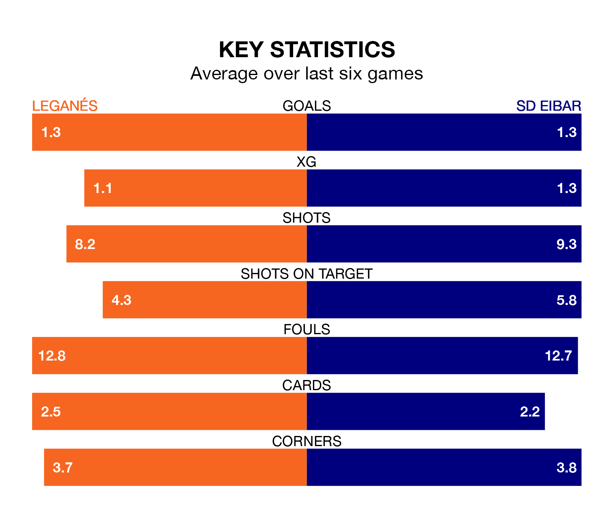

The Segunda División's top two sides face each other at Estadio Municipal de Butarque in Sunday's late kick-off, when Leganés host second-placed SD Eibar.
Leganés have picked up 14 wins and eight draws from 27 games so far this season, and sit four points above the visitors going into the 8pm match.
Eibar, meanwhile, have won 13 and drawn seven, picking up 46 points.
With 42 goals in 27 games so far this season, Eibar are the league's second-highest scorers with 1.6 goals per game. And they are conceding at an average rate, letting in 30 goals at a rate of 1.1 per game.
Leganés are also above average scorers, with 1.4 goals per game, compared to a league average of 1.1. They have conceded 0.6 goals per game.
With Diego Conde between the sticks, the home side can rely on one of the league's safest pair of hands. He has kept 12 clean sheets in his 25 appearances this season, and no 'keeper has prevented the opposition scoring more often in the Segunda División.
In the visitors' net, Luca Zinedine Zidane has six clean sheets in 27 games. He has conceded a goal every 87 minutes, 80% more often than the 155 minutes between goals for Conde Alcolado.
In the last 10 years, Leganés and Eibar have played each other on 13 occasions. Leganés won two of them, Eibar six, and they drew five times.
On average, Leganés scored 0.8 goals and Eibar 1.2 in those matches.
Their last meeting was on September 3, when Leganés won 1-0 away.
Leganés are in reasonable form in the Segunda División, with three wins and two draws from their last six games.
With four wins and two draws over that period, Eibar's form is better – they have taken 14 points from 18, compared to Leganés's 11.
Leganés's last match was on February 18, a 3-0 win against AD Alcorcón, with Daniel Raba Antolí, Diego García Campos and Francisco Portillo getting the goals for Leganés.
Eibar drew 0-0 with Elche CF last time out, also on February 18.
Updated: 10:08 (UTC), 23/02/24